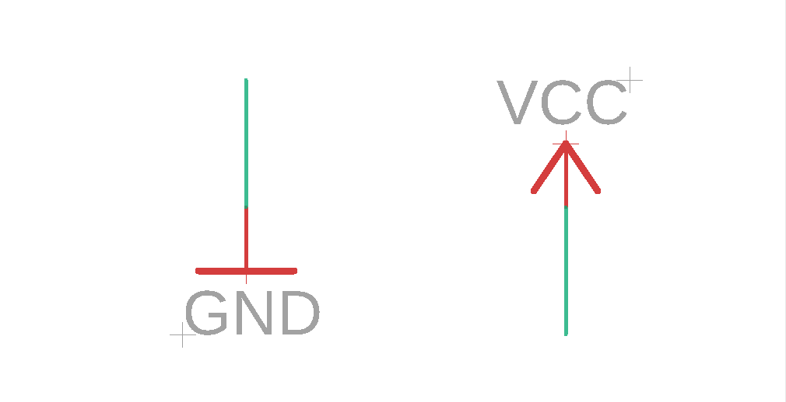
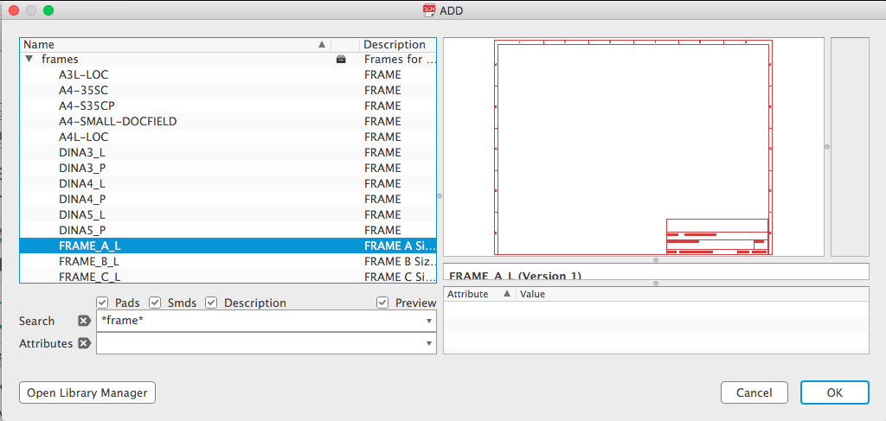

Eagle Schematic Design - 2
This is the 2nd guide on Eagle schematics. This guide shows how to simplify schematic drawings with names, labels, and frames.
Before starting this guide, make sure to have gone through the Eagle Schematic Design - 1 guide. There you will learn how to add parts and connect them together.
Power and Ground Symbols
Here I have a schematic. It is an ATTiny85 microcontroller, using an NPN transistor to turn on/off parallel LEDs. There is a 5-pin header for connecting a potentiometer, plus two sets of 2-pin headers for power (one in and on out).
In the picture above, all the 5V and GND connections have lines drawn to connect them.
These lines make the schematic harder to read, because they are difficult to follow by eye, and they sometimes need to cross over each other.
We can make it simpler by using symbols: power (Vcc) and ground (GND)
These symbols are both in the Homemade Hardware Eagle library. Add a new part to the schematic, and find Vcc and GND.
{kind=link}
{kind=link}
Notice how I used *asterisks* when entering a search term. I recommend doing this all the time when searching.
With our two new symbols added, we can start using them to replace all those green 5V and GND lines.
First, I will copy a Vcc and GND symbol, and connect them both to a 2-pin power input header.
Now, I am going to DELETE the power and ground green connections on the ATtiny85.
Then, copy/paste the Vcc and GND symbols, and draw NETs to connect them to the ATtiny85.
Now do this on the entire schematic. Replace any Vcc or GND green connection with a symbol. This is what the schematic will look like afterwards:
{kind=link}
Now there are far fewer green lines in our schematic. I think it look less messy, and it is easier to see where exactly power and ground are touching the different parts.
Net Names and Labels
There is a long green connection, where the ATtiny85 connects to the NPN transistor. If all schematics needed long lines like these, they would get messy quickly!
We can clean it up by creating a NAME for our NET, and then adding a LABEL.
First: I'll delete the long green NET that is there right now:

Second: I'll draw two smaller NETs, one on the ATtiny85 and the other on the resistor leading to the transistor:
Third: select the NAME command (either clicking the icon or entering into the text box). Click one of the NETs you drew, and give it a variable name.
I'll call it TINY_TO_TRANS:
Fourth: click OK, and you will then be given the option to place a LABEL. This label shows you the name of your connection. If the name of the connection changes, the label will automatically update.
Note: you can also label a NET at any time by using the LABEL command or button:
Fifth: I don't like the default style of Eagle labels, so I always change them to a "flag" style (easier to read). Before placing the label (you're still moving it around), go to the top menu and click the Xref On button.
Now the label looks more like a flag, so it is no longer easy to confuse it with a part name or value.
Sixth: click to place it somewhere, or press the ESC key to not place a label.
Seventh: repeat steps 1-6 for the other small green connection on the resistor.
Amazing! Now both the pin on the ATtiny85 and the 220 ohm resistor are connected!
Because we not longer have to worry about long green connections making a mess, we can move the transistor and LED subcircuit farther away.
We can also do this with the 5-pin header (for the potentiometer). I'll give the sensor's output pin a name and label, and do the same on the ATtiny85.
We can also do this on all the LED cathodes (negative side). Here's what that could look like:
All of these names and labels are to help us make schematics easier to read. Remember there is no true right or wrong way to label, but the easier it is to read the more likely you will be able to see any mistakes.
Frames and Organizing
One last way to we can further organize and clean our schematic is to add a frame.
In the schematic, go to the "Add" window to add a new part.
Search for a "frame" (put *asterisks* around it, like *frame*)
I found an Eagle library that comes with the software, called frames (what a good name!).
The one called FRAME_A_L looks normal, I'll use it.
I'll place it on my schematic, so that it's bottom-left corner aligns with the schematic screens origin mark (the cross at the zero point).
Now I'll move each "subcircuit" to a different area, within the frame.
A "subcircuit" is simply a group of parts, where they are all there to help towards the same feature (or sub-feature). So, I moved:
- all the LED related parts to the bottom-left
- the ATtiny85 to the top-left
- the sensor input to the top-right
- the power in/out pins to the bottom-right
{kind=link}
You can also use the LINE and TEXT commands to make it even more clear what the subcircuits are:
{kind=link}